Chapter 3 · Part 1 — Brrr!
“Annie!” Jack again.
No .
He put his book quietly into his pack. He deeper into the cave.
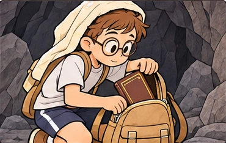
“Annie!” he a little louder.
Jack stepped on the .
The wet dog smell grew .
kept going, deeper into the smelly blackness.
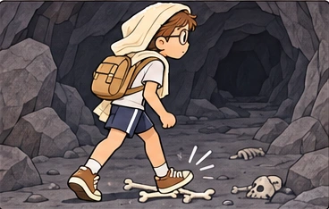
He into something. He gasped.
“Jack?” Annie. “Is that you?”
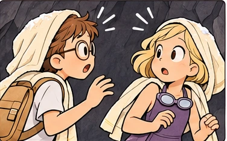
“Didn’t you hear me calling?” Jack . “We have to get out of here!”
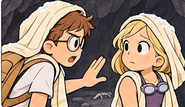
“Wait,” she said. “Someone’s sleeping there. Hear him snoring?”
Jack heard a low, moaning. It was loud, then soft. Loud, then soft.
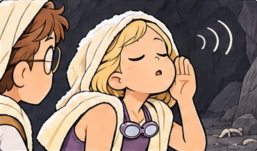
“That’s not a person,” he . “It’s a great cave bear!”
A booming snore the air.
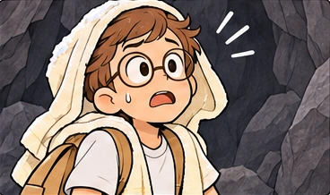
“!” said Annie.
“! Go!” said Jack.
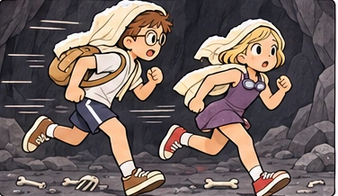
He and Annie ran through the cave, over the , and out into the falling snow.
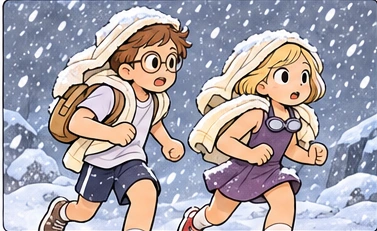
They kept on going. They ran between fallen rocks and under jagged .
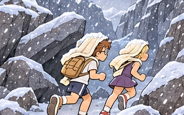
Finally they and turned around.
All they could see was snow and rocks and their own .
bear.
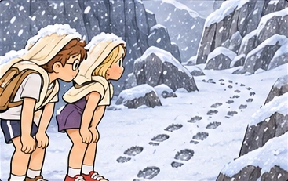
“Whew,” Annie. “That was lucky.”
“Yeah,” Jack. “He probably never even woke up. We just got in a panic.”
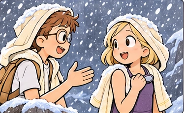
Annie close to Jack. “Brrr! I’m f-freezing,” she said.
“Me too,” he .
He took off his glasses to wipe off the snow. The cold wind blew against his legs.
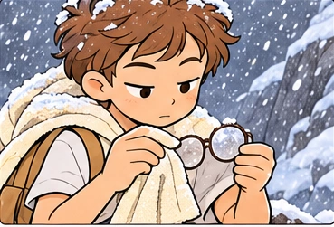
“Wow,” Annie said. “Look.” She to something behind Jack.
“What?” Jack put his glasses back on and around.
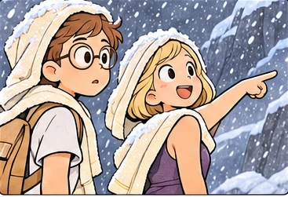
Under a cliff a wide ledge. Under the ledge was another cave.
Only this cave seemed to have a golden .
This one cozy and safe and warm.
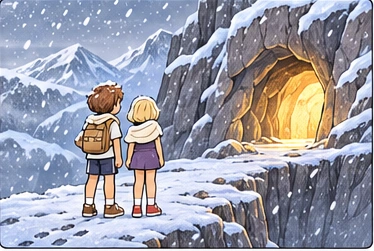